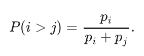
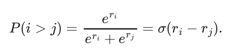
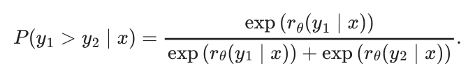
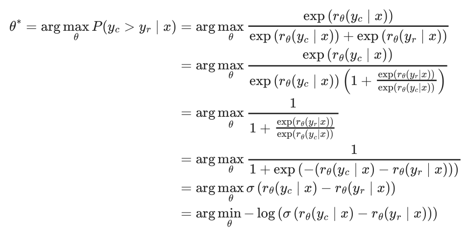
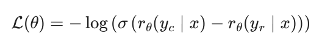
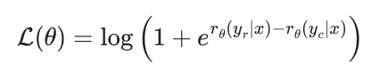
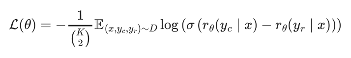
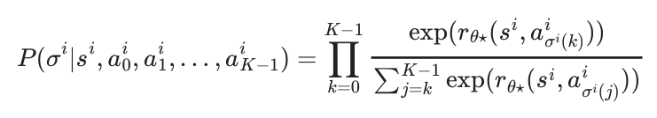
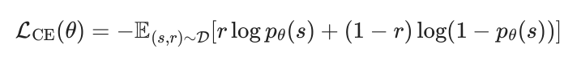
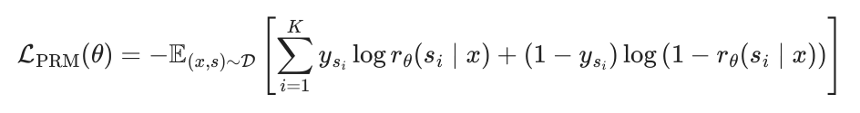

5Reward Modeling
- How language models are trained to predict human preferences
- How to implement reward models in PyTorch
- The different varieties of reward models used today
Reward models are core to the modern approach to RLHF by being where the complex human preferences are learned. They are what enable our models to learn from hard to specify signals. They compress complex features in the data into a representation that can be used in downstream training – a sort of magic that once again shows the complex capacity of modern deep learning. These models act as the proxy objectives by which the core optimization is done, as studied in the following chapters.
Reward models broadly have historically been used extensively in reinforcement learning research as a proxy for environment rewards [1]. Reward models were proposed, in their modern form, as a tool for studying the value alignment problem [2]. These models tend to take in some sort of input and output a single scalar value of reward. This reward can take multiple forms – in traditional RL problems it was attempting to approximate the exact environment reward for the problem, but we will see in RLHF that reward models actually output a probability of a certain input being “of high quality” (i.e. the chosen answer among a pairwise preference relation). The practice of reward modeling for RLHF is closely related to inverse reinforcement learning, where the problem is to approximate an agent’s reward function given trajectories of behavior [3], and other areas of deep reinforcement learning. The high level problem statement is the same, but the implementation and focus areas are entirely different, so they’re often considered as totally separate areas of study.
The most common reward model, often called a Bradley-Terry reward model and the primary focus of this chapter, predicts the probability that a piece of text was close to a “preferred” piece of text from the training comparisons. Later in this section we also compare these to Outcome Reward Models (ORMs), Process Reward Model (PRM), and other types of reward models.
Throughout this chapter, we use x to denote prompts and y to denote completions. This notation is common in the language model literature, where methods operate on full prompt-completion pairs rather than individual tokens.
#5.1 Training Reward Models
The canonical implementation of a reward model is derived from the Bradley-Terry model of preference [4]. There are two popular expressions for how to train a standard reward model for RLHF – they are mathematically equivalent. To start, a Bradley-Terry model of preferences defines the probability that, in a pairwise comparison between two items i and j, a judge prefers i over j:

The Bradley-Terry model assumes that each item has a latent strength pi > 0, and that observed preferences are a noisy reflection of these underlying strengths. It is common to reparametrize the Bradley-Terry model with unbounded scores, where pi = eri, which results in the following form (where σ denotes the sigmoid function, σ(z) = 1/(1 + e−z)):

Only differences in scores matter: adding the same constant to all ri leaves P(i > j) unchanged. These forms are not a law of nature, but a useful approximation of human preferences that often works well in RLHF.
To train a reward model, we must formulate a loss function that satisfies the above relation. In practice, this is done by converting a language model into a model that outputs a scalar score, often via a small linear head that produces a single logit. Given a prompt x and two sampled completions y1 and y2, we score both with a reward model rθ and write the conditional scores as rθ(yi ∣x).
The probability of success for a given reward model in a pairwise comparison becomes:

We denote the preferred completion as yc (chosen) and the rejected completion as yr, where the preference relation yc ≻yr indicates that yc is preferred over yr.
Then, by maximizing the log-likelihood of the above function (or alternatively minimizing the negative log-likelihood), we can arrive at the loss function to train a reward model:

The first form, as in [5] and other works:

Second, as in [6] and other works:

These are equivalent by letting Δ = rθ(yc ∣x) −rθ(yr ∣x) and using σ(Δ) =11+e−Δ, which implies −log σ(Δ) = log(1 + e−Δ) = log (1 + erθ(yr∣x)−rθ(yc∣x)). They both appear in the RLHF literature.
#5.2 Architecture
The most common way reward models are implemented is through an abstraction similar to Transformer’s AutoModelForSequenceClassification, which appends a small linear head to the language model that performs classification between two outcomes – chosen and rejected. At inference time, the model outputs the probability that the piece of text is chosen as a single logit from the model.
Other implementation options exist, such as just taking a linear layer directly from the final embeddings, but they are less common in open tooling.
#5.3 Implementation Example
Implementing the reward modeling loss is quite simple. More of the implementation challenge is on setting up a separate data loader and inference pipeline. Given the correct dataloader with tokenized, chosen and rejected prompts with completions, the loss is implemented as:
import torch.nn as nn
# inputs_chosen / inputs_rejected include the prompt tokens x and the respective
# completion tokens (y_c or y_r) that the reward model scores jointly.
rewards_chosen = model(**inputs_chosen)
rewards_rejected = model(**inputs_rejected)
loss = -nn.functional.logsigmoid(rewards_chosen - rewards_rejected).mean()As for the bigger picture, this is often within a causal language model that has an additional head added (and learned with the above loss) that transitions from the final hidden state to the score of the inputs. This model will have a structure as follows:
import torch
import torch.nn as nn
import torch.nn.functional as F
class BradleyTerryRewardModel(nn.Module):
"""
Standard scalar reward model for Bradley-Terry preference learning.
Usage (pairwise BT loss):
rewards_chosen = model(**inputs_chosen) # (batch,)
rewards_rejected = model(**inputs_rejected) # (batch,)
loss = -F.logsigmoid(rewards_chosen - rewards_rejected).mean()
"""
def __init__(self, base_lm):
super().__init__()
self.lm = base_lm # e.g., AutoModelForCausalLM
self.head = nn.Linear(self.lm.config.hidden_size, 1)
def _sequence_rep(self, hidden, attention_mask):
"""
Get a single vector per sequence to score.
Default: last non-padding token (EOS token); if no mask, last token.
hidden: (batch, seq_len, hidden_size)
attention_mask: (batch, seq_len)
"""
# Index of last non-pad token in each sequence
# attention_mask is 1 for real tokens, 0 for padding
lengths = attention_mask.sum(dim=1) - 1 # (batch,)
batch_idx = torch.arange(hidden.size(0), device=hidden.device)
return hidden[batch_idx, lengths] # (batch, hidden_size)
def forward(self, input_ids, attention_mask):
"""
A forward pass designed to show inference structure of a standard reward
model.
To train one, this function will need to be modified to compute rewards
from both
chosen and rejected inputs, applying the loss above.
"""
outputs = self.lm(
input_ids=input_ids,
attention_mask=attention_mask,
output_hidden_states=True,
return_dict=True,
)
# Final hidden states: (batch, seq_len, hidden_size)
hidden = outputs.hidden_states[-1]
# One scalar reward per sequence: (batch,)
seq_repr = self._sequence_rep(hidden, attention_mask)
rewards = self.head(seq_repr).squeeze(-1)
return rewardsIn this section and what follows, most of the implementation complexity for reward models (and much of post-training) is around constructing the data-loaders correctly and distributed learning systems. Note, when training reward models, the most common practice is to train for only 1 epoch to avoid overfitting.
#5.4 Variants
Reward modeling is a relatively under-explored area of RLHF. The traditional reward modeling loss has been modified in many popular works, but the modifications have not solidified into a single best practice.
#5.4.1 Preference Margin Loss
In the case where annotators are providing either scores or rankings on a Likert Scale, the magnitude of the relational quantities can be used in training. The most common practice is to binarize the data along the preference direction, reducing the mixed information of relative ratings or the strength of the ranking to just chosen and rejected completions. The additional information, such as the magnitude of the preference, has been used to improve model training, but it has not converged as a standard practice. Llama 2 proposes using the margin between two datapoints, m(yc, yr), to distinguish the magnitude of preference:

For example, each completion is often given a ranking from 1 to 5 in terms of quality. In the case where the chosen sample was assigned a score of 5 and rejected a score of 2, the margin m(yc, yr) = 5 −2 = 3. Other functions for computing margins can be explored.
Note that in Llama 3 the margin term was removed as the team observed diminishing improvements after scaling.
#5.4.2 Balancing Multiple Comparisons Per Prompt
InstructGPT studies the impact of using a variable number of completions per prompt, yet balancing them in the reward model training [5]. To do this, they weight the loss updates per comparison per prompt. At an implementation level, this can be done automatically by including all examples with the same prompt in the same training batch, naturally weighing the different pairs – not doing this caused overfitting to the prompts. The loss function becomes:

#5.4.3 K-wise Loss Function
There are many other formulations that can create suitable models of human preferences for RLHF. One such example, used in the popular, early RLHF’d models Starling 7B and 34B [7], is a K-wise loss function based on the Plackett-Luce model [8].
Zhu et al. 2023 [9] formalizes the setup as follows. With a prompt, or state, si, K actions (a0i, a1i, ⋯, aKi−1) are sampled from P(a0, ⋯, aK−1|si). Then, labelers are used to rank preferences with σi : [K] ↦[K] is a function representing action rankings, where σi(0) is the most preferred action. This yields a preference model capturing the following:

When K = 2, this reduces to the Bradley-Terry (BT) model for pairwise comparisons. Regardless, once trained, these models are used similarly to other reward models during RLHF training.
#5.5 Outcome Reward Models
The majority of preference tuning for language models and other AI systems is done with the Bradley Terry models discussed above. For reasoning heavy tasks, one can use an Outcome Reward Model (ORM). The training data for an ORM is constructed in a similar manner to standard preference tuning. Here, we have a problem statement or prompt, x and two completions y1 and y2. The inductive bias used here is that one completion should be a correct solution to the problem and one incorrect, resulting in (yc, yic).
The shape of the models used is very similar to a standard reward model, with a linear layer appended to a model that can output a single logit (in the case of an RM) – with an ORM, the training objective that follows is slightly different [10]:
[We] train verifiers with a joint objective where the model learns to label a model completion as correct or incorrect, in addition to the original language modeling objective. Architecturally, this means our verifiers are language models, with a small scalar head that outputs predictions on a per-token basis. We implement this scalar head as a single bias parameter and single gain parameter that operate on the logits outputted by the language model’s final unembedding layer.
To translate, this is implemented as a language modeling head that can predict two classes per token (1 for correct, 0 for incorrect), rather than a classification head of a traditional RM that outputs one logit for the entire sequence. Formally, following [11] this can be shown as:

where r ∈0, 1 is a binary label where 1 applies to a correct answer to a given prompt and 0 applies to an incorrect, and pθ(s) is the scalar proportional to predicted probability of correctness from the model being trained.
Implementing an outcome reward model (and other types, as we’ll see with the Process Reward Model) involves applying the cross-entropy loss per-token based on if the completion is a correct sample. This is far closer to the language modeling loss, where it does not need the structured chosen-rejected nature of standard Bradley-Terry reward models.
The model structure could follow as:
import torch.nn as nn
import torch.nn.functional as F
class OutcomeRewardModel(nn.Module):
def __init__(self, base_lm):
super().__init__()
self.lm = base_lm # e.g., AutoModelForCausalLM
self.head = nn.Linear(self.lm.config.hidden_size, 1)
def forward(self, input_ids, attention_mask=None, labels=None):
"""
The input data here will be tokenized prompts and completions along with
labels
per prompt for correctness.
"""
outputs = self.lm(
input_ids=input_ids,
attention_mask=attention_mask,
output_hidden_states=True,
return_dict=True,
)
# Final hidden states: (batch, seq_len, hidden_size)
hidden = outputs.hidden_states[-1]
# One scalar logit per token: (batch, seq_len)
logits = self.head(hidden).squeeze(-1)
# Only compute loss on completion tokens (labels 0 or 1)
# Prompt tokens have labels = -100
mask = labels != -100
if mask.any():
loss = F.binary_cross_entropy_with_logits(
logits[mask], labels[mask].float()
)
return loss, logitsA simplified version of the loss follows:
# Assume model already has: model.lm (backbone) + model.head
hidden = model.lm(**inputs, output_hidden_states=True).hidden_states[-1]
logits_per_token = model.head(hidden).squeeze(-1) # (batch, seq_len)
# This will sometimes be compressed as model.forward() in other implementations
# Binary labels: 1=correct, 0=incorrect (prompt tokens masked as -100)
mask = labels != -100
loss = F.binary_cross_entropy_with_logits(
logits_per_token[mask], labels[mask].float()
)The important intuition here is that an ORM will output a probability of correctness at every token in the sequence. This can be a noisy process, as the updates and loss propagates per token depending on outcomes and attention mappings.
These models have continued in use, but are less supported in open-source RLHF tools. For example, the same type of ORM was used in the seminal work Let’s Verify Step by Step [12], but without the language modeling prediction piece of the loss. Then, the final loss is a cross-entropy loss on every token predicting if the final answer is correct.
Given the lack of support, the term outcome reward model (ORM) has been used in multiple ways. Some literature, e.g. [11], continues to use the original definition from Cobbe et al. 2021. Others do not.
#5.6 Process Reward Models
Process Reward Models (PRMs), originally called Process-supervised Reward Models, are reward models trained to output scores at every step in a chain-of-thought reasoning process. These differ from a standard RM that outputs a score only at an EOS token or a ORM that outputs a score at every token. Process Reward Models require supervision at the end of each reasoning step, and then are trained similarly where the tokens in the step are trained to their relevant target – the target is the step in PRMs and the entire response for ORMs.
Following [12], a binary-labeled PRM is commonly optimized with a per-step cross-entropy loss:

where s is a sampled chain-of-thought with K annotated steps, ysi ∈{0, 1} denotes whether the i-th step is correct, and rθ(si ∣x) is the PRM’s predicted probability that step si is valid conditioned on the original prompt x.
Here’s an example of how this per-step label can be packaged in a trainer, from HuggingFace’s TRL (Transformer Reinforcement Learning) [13]:
# Get the ID of the separator token and add it to the completions
separator_ids = tokenizer.encode(step_separator, add_special_tokens=False)
completions_ids = [completion + separator_ids for completion in completions_ids]
# Create the label
labels = [[-100] * (len(completion) - 1) + [label] for completion, label in
zip(completions_ids, labels)]Traditionally PRMs are trained with a language modeling head that outputs a token only at the end of a reasoning step, e.g. at the token corresponding to a double new line or other special token. These predictions tend to be -1 for incorrect, 0 for neutral, and 1 for correct. These labels do not necessarily tie with whether or not the model is on the right path, but if the step is correct.
An example construction of a PRM is shown below.
import torch.nn as nn
import torch.nn.functional as F
class ProcessRewardModel(nn.Module):
def __init__(self, base_lm, num_classes=3):
super().__init__()
self.lm = base_lm # e.g., AutoModelForCausalLM
self.head = nn.Linear(self.lm.config.hidden_size, num_classes)
def forward(self, input_ids, attention_mask=None, labels=None):
"""
The inputs are tokenizer prompts and completions, where the the end of a
"reasoning step" is denoted by another non-padding token.
labels will be a list of labels, True, False, and Neutral (3 labels)
which
will be predicted by the model.
"""
outputs = self.lm(
input_ids=input_ids,
attention_mask=attention_mask,
output_hidden_states=True,
return_dict=True,
)
# Final hidden states: (batch, seq_len, hidden_size)
hidden = outputs.hidden_states[-1]
# One logit vector per token: (batch, seq_len, num_classes)
logits = self.head(hidden)
# Only compute loss at step boundaries (where labels != -100)
# Labels map: -1 -> 0, 0 -> 1, 1 -> 2 (class indices)
mask = labels != -100
if mask.any():
loss = F.cross_entropy(
logits[mask], labels[mask]
)
return loss, logitsThe core loss function looks very similar to outcome reward models, with the labels being applied at different intervals.
# Assume model outputs 3-class logits per token
hidden = model.lm(**inputs, output_hidden_states=True).hidden_states[-1]
logits = model.head(hidden) # (batch, seq_len, 3)
# 3-class labels at step boundaries only: 0=-1, 1=0, 2=1 (others masked as -100)
mask = labels != -100
loss = F.cross_entropy(logits[mask], labels[mask])#5.7 Reward Models vs. Outcome RMs vs. Process RMs vs. Value
#Functions
The various types of reward models covered indicate the spectrum of ways that “quality” can be measured in RLHF and other post-training methods. Below, a summary of what the models predict and how they are trained.
| Type | Output | Training | Use Case |
|---|---|---|---|
| Reward Models | chosen response at Quality of text via probability of EOS token | Contrastive loss between comparisons between pairwise (or N-wise) completions | Regression or classification head on top of LM features |
| Outcome Reward Models | Probability that an answer is correct per-token | (e.g., success/failure on Labeled outcome pairs verifiable domains) | Language modeling head per-token cross-entropy, where every label is the outcome level label |
| Process Reward Models | A reward or score for intermediate reasoning steps steps at end of | Trained using intermediate token in reasoning step) annotations (trained per feedback or stepwise | Language modeling head only running inference per reasoning step, predicts three classes -1, 0, 1 |
| Value Functions | The expected return given the current state | Trained via regression to each point in sequence | A classification with output per-token |
Some notes, given the above table has a lot of edge cases.
- Both in preference tuning and reasoning training, the value functions often have a discount factor of 1, which makes a value function even closer to an outcome reward model, but with a different training loss.
- A process reward model can be supervised by doing rollouts from an intermediate state and collecting outcome data. This blends multiple ideas, but if the loss is per reasoning step labels, it is best referred to as a PRM.
#5.8 Generative Reward Modeling
With the cost of preference data, a large research area emerged to use existing language models as a judge of human preferences or in other evaluation settings [14]. The core idea is to prompt a language model with instructions on how to judge, a prompt, and two completions (much as would be done with human labelers). An example prompt, from one of the seminal works here for the chat evaluation MT-Bench [14], follows:
[System]
Please act as an impartial judge and evaluate the quality of the responses
provided by two AI assistants to the user question displayed below.
You should choose the assistant that follows the user's instructions and answers
the user's question better.
Your evaluation should consider factors such as the helpfulness, relevance,
accuracy, depth, creativity, and level of detail of their responses.
Begin your evaluation by comparing the two responses and provide a short
explanation.
Avoid any position biases and ensure that the order in which the responses were
presented does not influence your decision.
Do not allow the length of the responses to influence your evaluation.
Do not favor certain names of the assistants.
Be as objective as possible.
After providing your explanation, output your final verdict by strictly following
this format: "[[A]]" if assistant A is better, "[[B]]" if assistant B is better,
and "[[C]]" for a tie.
[User Question]
{question}
[The Start of Assistant A's Answer]
{answer_a}
[The End of Assistant A's Answer]
[The Start of Assistant B's Answer]
{answer_b}
[The End of Assistant B's Answer]Given the efficacy of LLM-as-a-judge for evaluation, spawning many other evaluations such as AlpacaEval [15], Arena-Hard [16], and WildBench [17], many began using LLM-as-a-judge instead of reward models to create and use preference data.
An entire field of study has emerged to study how to use so called “Generative Reward Models” [18] [19] [20] (including models trained specifically to be effective judges [21]), but on RM evaluations they tend to be behind existing reward models, showing that reward modeling is an important technique for current RLHF.
A common trick to improve the robustness of LLM-as-a-judge workflows is to use a sampling temperature of 0 to reduce variance of ratings.
#5.9 Further Reading
The academic literature for reward modeling established itself in 2024. The bulk of progress in reward modeling early on has been in establishing benchmarks and identifying behavior modes. The first RM benchmark, RewardBench, provided common infrastructure for testing reward models [22]. Since then, RM evaluation has expanded to be similar to the types of evaluations available to general post-trained models, where some evaluations test the accuracy of prediction on domains with known true answers [22] or those more similar to “vibes” performed with LLM-as-a-judge or correlations to other benchmarks [23].
Examples of new benchmarks include:
- Text-only (general chat / preferences): RMB [24], RewardBench2 [25], Preference Proxy Evaluations [26], or RM-Bench [27].
- Specialized text-only (math, etc.): multilingual reward bench (M- RewardBench) [28], RAG-RewardBench for retrieval augmented generation (RAG) [29], ReWordBench for typos [30], RewardMATH [31], or AceMath-RewardBench [32].
- Process RMs: PRM Bench [33] or ProcessBench [34] and visual benchmarks of VisualProcessBench [35] or ViLBench [36].
- Agentic RMs: Agent-RewardBench [37] or CUARewardBench [38].
- Multimodal: MJ-Bench [39], Multimodal RewardBench [40], VL RewardBench [41], or VLRMBench [42].
To understand progress on training reward models, one can reference new reward model training methods, with aspect-conditioned models [43], high-quality human datasets [44] [45], scaling experiments [46], extensive experimentation [47], or debiasing data [48].
[1]R. S. Sutton, “Reinforcement learning: An introduction,” A Bradford Book, 2018.
[2]J. Leike, D. Krueger, T. Everitt, M. Martic, V. Maini, and S. Legg, “Scalable agent
alignment via reward modeling: A research direction,” arXiv preprint
arXiv:1811.07871, 2018.
[3]A. Y. Ng, S. Russell, et al., “Algorithms for inverse reinforcement learning.” in
Proceedings of the seventeenth international conference on machine learning, in
ICML ’00. 2000, pp. 663--670.
[4]R. A. Bradley and M. E. Terry, “Rank analysis of incomplete block designs: I. The
method of paired comparisons,” Biometrika, vol. 39, no. 3/4, pp. 324–345, 1952,
Accessed: Feb. 13, 2023. [Online]. Available: http://www. jstor.org/ stable/2334029
L. Ouyang et al., “Training language models to follow instructions with human
feedback,” Advances in neural information processing systems, vol. 35, pp. 27730– 27744, 2022.
[6]A. Askell et al., “A general language assistant as a laboratory for alignment,” arXiv preprint arXiv:2112.00861, 2021.
[7]B. Zhu et al., “Starling-7b: Improving helpfulness and harmlessness with rlaif,” in
First conference on language modeling, 2024.
[8]A. Liu, Z. Zhao, C. Liao, P. Lu, and L. Xia, “Learning plackett-luce mixtures from
partial preferences,” in Proceedings of the AAAI conference on artificial intelligence, 2019, pp. 4328–4335.
[9]B. Zhu, M. Jordan, and J. Jiao, “Principled reinforcement learning with human
feedback from pairwise or k-wise comparisons,” in International conference on
machine learning, PMLR, 2023, pp. 43037–43067.
[10]K. Cobbe et al., “Training verifiers to solve math word problems,” arXiv preprint
arXiv:2110.14168, 2021.
C. Lyu et al., “Exploring the limit of outcome reward for learning mathematical
reasoning,” arXiv preprint arXiv:2502.06781, 2025.
H. Lightman et al., “Let’s verify step by step,” in International conference on
learning representations (ICLR), 2024.
[13]L. von Werra et al., “TRL: Transformer reinforcement learning,” GitHub repository. https://github. com/huggingface/ trl; GitHub, 2020.
L. Zheng et al., “Judging llm-as-a-judge with mt-bench and chatbot arena,”
Advances in Neural Information Processing Systems, vol. 36, pp. 46595–46623,
2023.
[15]Y. Dubois, B. Galambosi, P. Liang, and T. B. Hashimoto, “Length-controlled
alpacaeval: A simple way to debias automatic evaluators,” arXiv preprint
arXiv:2404.04475, 2024.
[16]T. Li et al., “From crowdsourced data to high-quality benchmarks: Arena-hard and BenchBuilder pipeline,” in International conference on machine learning (ICML),
2025.
[17]B. Y. Lin et al., “WILDBENCH: Benchmarking LLMs with challenging tasks from real users in the wild,” in International conference on learning representations (ICLR),
2025.
[18]D. Mahan et al., “Generative reward models,” 2024, Available: https://www.
synthlabs. ai/pdf/Generative_ Reward_Models. pdf
[19]L. Zhang, A. Hosseini, H. Bansal, M. Kazemi, A. Kumar, and R. Agarwal, “Generative verifiers: Reward modeling as next-token prediction,” in International conference on learning representations (ICLR), 2025.
[20]Z. Ankner, M. Paul, B. Cui, J. D. Chang, and P. Ammanabrolu, “Critique-out-loud
reward models,” arXiv preprint arXiv:2408.11791, 2024.
[21]S. Kim et al., “Prometheus: Inducing fine-grained evaluation capability in language models,” in The twelfth international conference on learning representations, 2023.
N. Lambert et al., “Rewardbench: Evaluating reward models for language
modeling,” in Conference of the north american chapter of the association for
computational linguistics (NAACL), 2025.
[23]X. Wen et al., “Rethinking reward model evaluation: Are we barking up the wrong
tree?” in International conference on learning representations (ICLR), 2025.
[24]E. Zhou et al., “RMB: Comprehensively benchmarking reward models in LLM
alignment,” in International conference on learning representations (ICLR), 2025.
[25]S. Malik et al., “RewardBench 2: Advancing reward model evaluation,” arXiv preprint arXiv:2506.01937, 2025.
[26]E. Frick et al., “How to evaluate reward models for RLHF,” in International
conference on learning representations (ICLR), 2025.
[27]Y. Liu, Z. Yao, R. Min, Y. Cao, L. Hou, and J. Li, “RM-bench: Benchmarking reward
models of language models with subtlety and style,” in International conference on learning representations (ICLR), 2025.
[28]S. Gureja et al., “M-RewardBench: Evaluating reward models in multilingual
settings,” in Annual meeting of the association for computational linguistics (ACL), 2025.
[29]Z. Jin et al., “RAG-RewardBench: Benchmarking reward models in retrieval
augmented generation for preference alignment,” in Annual meeting of the
association for computational linguistics (ACL), 2025.
[30]Z. Wu, M. Yasunaga, A. Cohen, Y. Kim, A. Celikyilmaz, and M. Ghazvininejad,
“reWordBench: Benchmarking and improving the robustness of reward models with transformed inputs,” arXiv preprint arXiv:2503.11751, 2025.
[31]S. Kim et al., “Evaluating robustness of reward models for mathematical reasoning,” arXiv preprint arXiv:2410.01729, 2024.
[32]Z. Liu, Y. Chen, M. Shoeybi, B. Catanzaro, and W. Ping, “AceMath: Advancing
frontier math reasoning with post-training and reward modeling,” in Annual meeting of the association for computational linguistics (ACL), 2025. Available: https://arxiv. org/abs/2412. 15084
[33]M. Song, Z. Su, X. Qu, J. Zhou, and Y. Cheng, “PRMBench: A fine-grained and
challenging benchmark for process-level reward models,” in Annual meeting of the association for computational linguistics (ACL), 2025.
[34]C. Zheng et al., “ProcessBench: Identifying process errors in mathematical
reasoning,” in Annual meeting of the association for computational linguistics (ACL), 2025. Available: https://arxiv. org/abs/2412. 06559
[35]W. Wang et al., “VisualPRM: An effective process reward model for multimodal
reasoning,” arXiv preprint arXiv:2503.10291, 2025.
[36]H. Tu, W. Feng, H. Chen, H. Liu, X. Tang, and C. Xie, “ViLBench: A suite for vision-language process reward modeling.” Mar. 2025. Available: https://arxiv.
[37]T. Men, Z. Jin, P. Cao, Y. Chen, K. Liu, and J. Zhao, “Agent-RewardBench: Towards a unified benchmark for reward modeling across perception, planning, and safety in
real-world multimodal agents,” in Proceedings of the 63rd annual meeting of the
association for computational linguistics (volume 1: Long papers), Vienna, Austria: Association for Computational Linguistics, Jul. 2025, pp. 17521–17541. doi:
10.18653/v1/2025.acl-long.857.
[38]H. Lin et al., “CUARewardBench: A benchmark for evaluating reward models on
computer-using agent.” 2025. Available: https://arxiv. org/abs/2510. 18596
[39]Z. Chen et al., “MJ-bench: Is your multimodal reward model really a good judge for text-to-image generation?” arXiv preprint arXiv:2407.04842, 2024.
[40]M. Yasunaga, L. Zettlemoyer, and M. Ghazvininejad, “Multimodal rewardbench:
Holistic evaluation of reward models for vision language models,” arXiv preprint
arXiv:2502.14191, 2025.
[41]L. Li et al., “VLRewardBench: A challenging benchmark for vision-language
generative reward models,” arXiv preprint arXiv:2411.17451, 2024.
[42]J. Ruan et al., “Vlrmbench: A comprehensive and challenging benchmark for vision-language reward models,” arXiv preprint arXiv:2503.07478, 2025.
[43]H. Wang, W. Xiong, T. Xie, H. Zhao, and T. Zhang, “Interpretable preferences via
multi-objective reward modeling and mixture-of-experts,” in Conference on
empirical methods in natural language processing (EMNLP), 2024.
[44]Z. Wang et al., “HelpSteer2: Open-source dataset for training top-performing
reward models,” arXiv preprint arXiv:2406.08673, 2024.
[45]Z. Wang et al., “HelpSteer2-preference: Complementing ratings with preferences,” in International conference on learning representations (ICLR), 2025.
[46]B. Adler et al., “Nemotron-4 340B technical report,” arXiv preprint
arXiv:2406.11704, 2024.
[47]H. Touvron et al., “Llama 2: Open foundation and fine-tuned chat models,” arXiv
preprint arXiv:2307.09288, 2023.
[48]J. Park, S. Jwa, M. Ren, D. Kim, and S. Choi, “Offsetbias: Leveraging debiased data for tuning evaluators,” in Conference on empirical methods in natural language
processing (EMNLP), 2024.